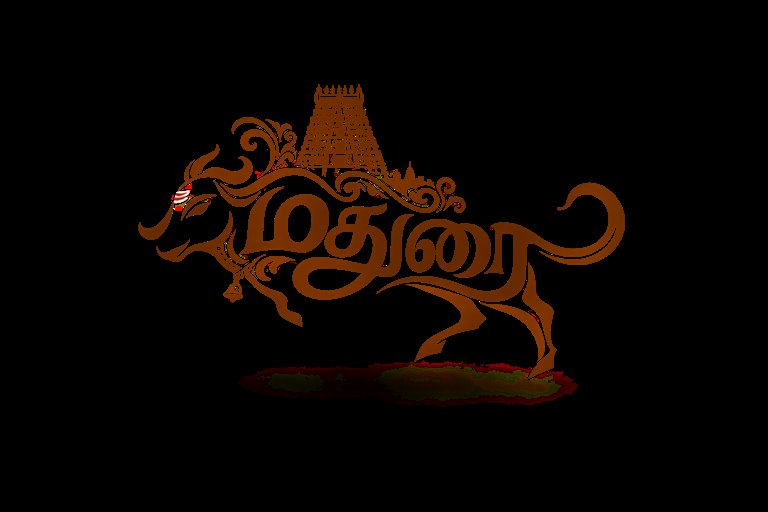
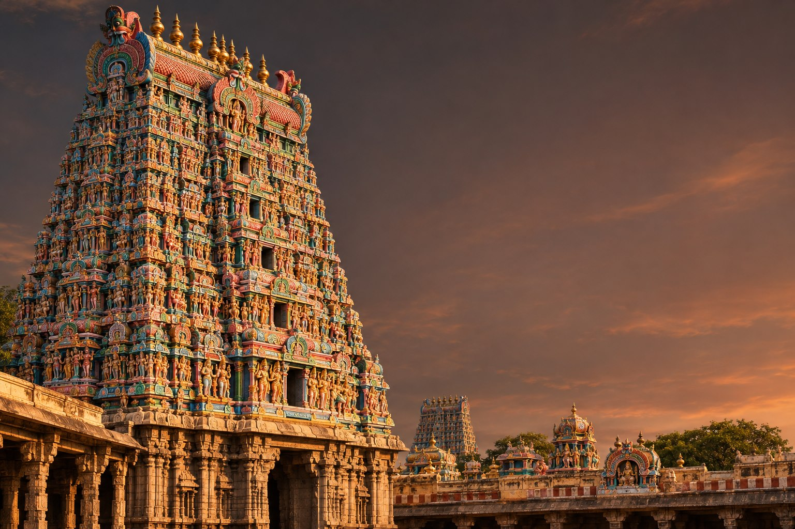

01MESS CLASSIC
Mutton chukka
சுக்கா₹160A southern mess favourite: tender mutton, a bold peppery finish and curry leaves in every bite. Made for a parotta on the side.
Discover the dish ↗
MADURAI MESSதமிழ் நாட்டின் சுவை Call the messMADURAI FLAVOUR · MADIVALA, BENGALURU
Pepper-rich chukka. Country-chicken biryani. Flaky bun parotta. A cold glass of jigarthanda. Tamil Nadu comfort, made for sharing.
THE MADURAI MESS FAVOURITES
Big-hearted plates and time-loved flavours from the city that knows how to eat well. Find your favourite, then bring someone who'll share.
A southern mess favourite: tender mutton, a bold peppery finish and curry leaves in every bite. Made for a parotta on the side.
Discover the dish ↗Country chicken brings a firmer bite and deep savour to this generous Tamil Nadu biryani, layered with warm spices and fragrant rice.
Discover the dish ↗A Madurai twist on layered parotta: rounded and soft within, golden at the edges, and even better with a little salna.
Discover the dish ↗Madurai's much-loved cooler: chilled milk, fragrant nannari syrup, almond gum and ice cream for a sweet finish.
Discover the drink ↗Prices are in INR. Food photographs are illustrative; presentation may vary.
A LITTLE MADURAI, A LOT OF HEART
Madurai is a city of temple streets, bustling markets and memorable meals. Its food is generous, aromatic and full of character. Madurai Mess brings that spirit to Madivala: familiar Tamil favourites, served with the warmth of a neighbourhood mess.
Our bull emblem takes its cue from Jallikattu, the celebrated Pongal-season tradition of Tamil Nadu. It stands for the pride, courage and festive spirit at the heart of our roots.

A LANDMARK FROM OUR HOMETOWN
This illustration celebrates the temple's vivid gopurams and intricate sculptures, landmarks that give Madurai its unmistakable character.
The twin shrines honour Goddess Meenakshi and Lord Sundareswarar, a form of Shiva.
The temple complex grew over centuries through the contributions of successive dynasties.
Madurai District dates the temple's origins to about 2,000 years ago.
Each Chithirai, Madurai celebrates the legendary wedding of Meenakshi and Sundareswarar.
GOOD FOOD IS BETTER SHARED
COME BY, MADIVALA
12, Tavareka Main Road,
Madivala, Bangalore – 623167
95855 56595
Managing Director · Karthikeyan
For the latest availability and prices, message us on WhatsApp.